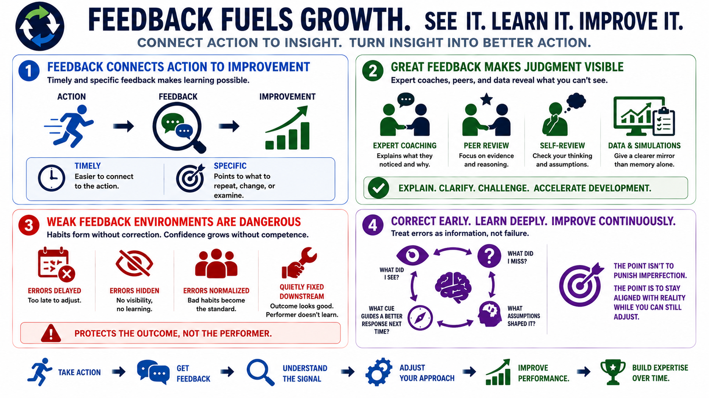

Feedback, Coaching, and Error Correction
Connecting to LMS... Progress: in progress

Narration
Feedback is the connection between action and improvement. Without feedback, people may not know whether their decisions are getting better, whether they are solving the right problem, or whether they are only becoming more confident in a weak method. Timely feedback is easier to connect to the action that produced it. Specific feedback is easier to use because it points to what should be repeated, changed, or examined more closely.
Expert coaching can accelerate development by making invisible judgment visible. A coach can explain what they noticed, which cue changed their interpretation, why they rejected an option, or how they checked for error. Peer review and self-review can also support expertise when they focus on evidence and reasoning instead of personal preference. Performance data, simulations, and scenario reviews give learners a clearer mirror than memory alone.
Weak feedback environments are dangerous because they allow habits to form without correction. If errors are delayed, hidden, normalized, or never connected back to the original decision, people can develop confidence without improvement. In some workplaces, the same process may appear successful because downstream teams quietly fix the problems. That protects the outcome in the moment but prevents the performer from learning.
Error correction is most useful before mistakes become automatic. A strong learning environment treats errors as information. It asks what the person saw, what they missed, what assumption shaped the action, and what cue should guide a better response next time. The point is not to punish imperfection. The point is to keep performance aligned with reality while the learner is still able to adjust.